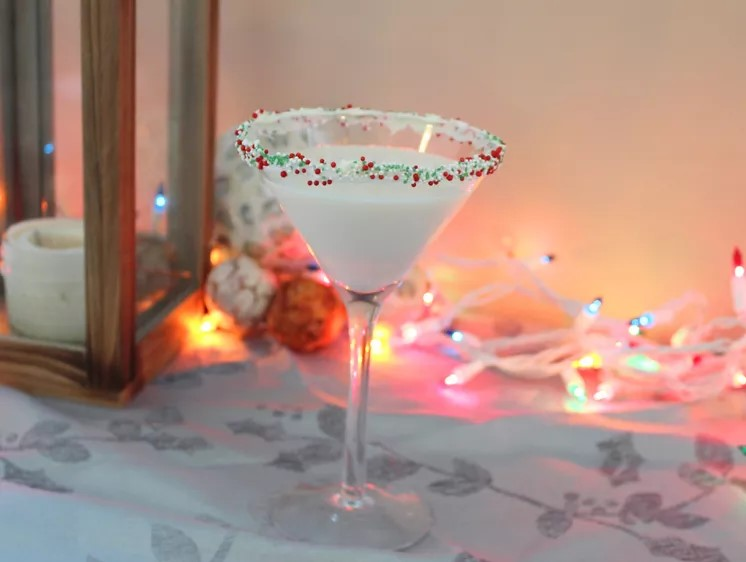

Sugar Cookie Martini

Description
This sugar cookie martini is like your favorite holiday sugar cookie in a cocktail, with just the cookie flavor you are hoping for. Not only is it festive, it's easy, too, with just a few ingredients.
Ingredients
- 1 teaspoon vanilla icing, or as needed
- 1 teaspoon sprinkles, or as needed
- 1 cup ice, or as needed
- 3 fluid ounces rum cream liqueur
- 1 1/2 ounces vanilla vodka
- 1/4 ounce Amaretto
Steps
- Rim martini glass with icing and sprinkles; set aside.
- Fill a cocktail shaker with ice.
- Pour in the rum cream, vodka, and amaretto.
- Cover and shake until the outside of shaker has frosted.
- Strain into a chilled glass.